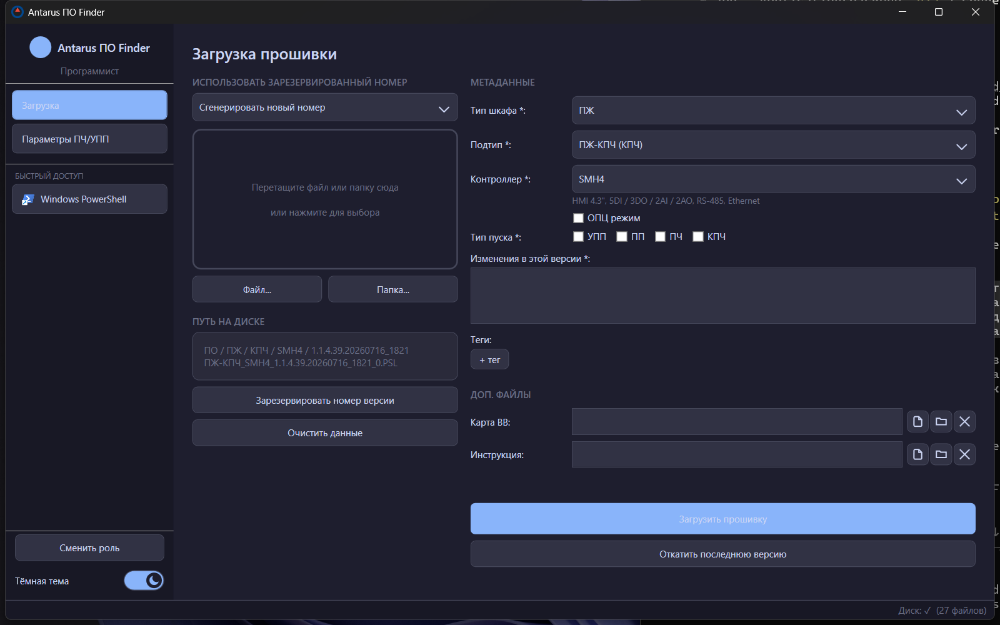
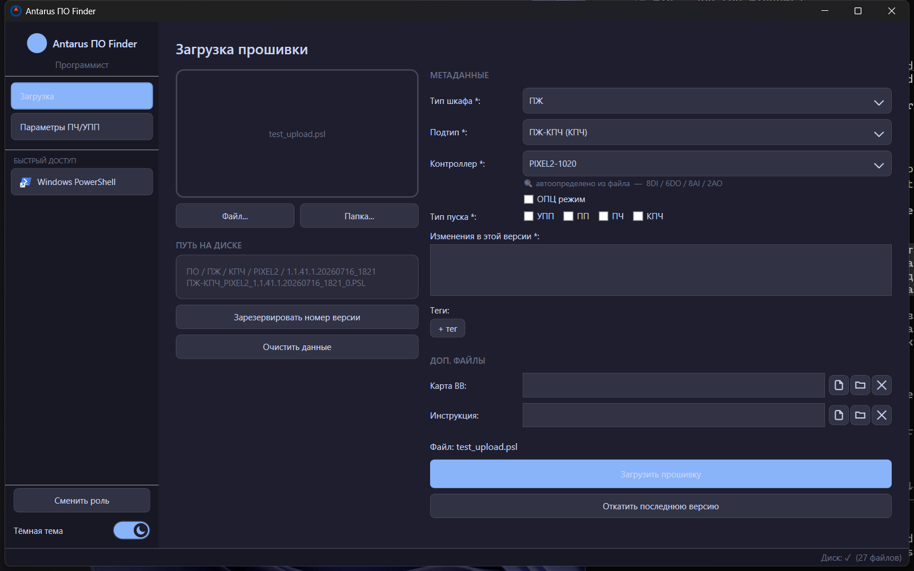
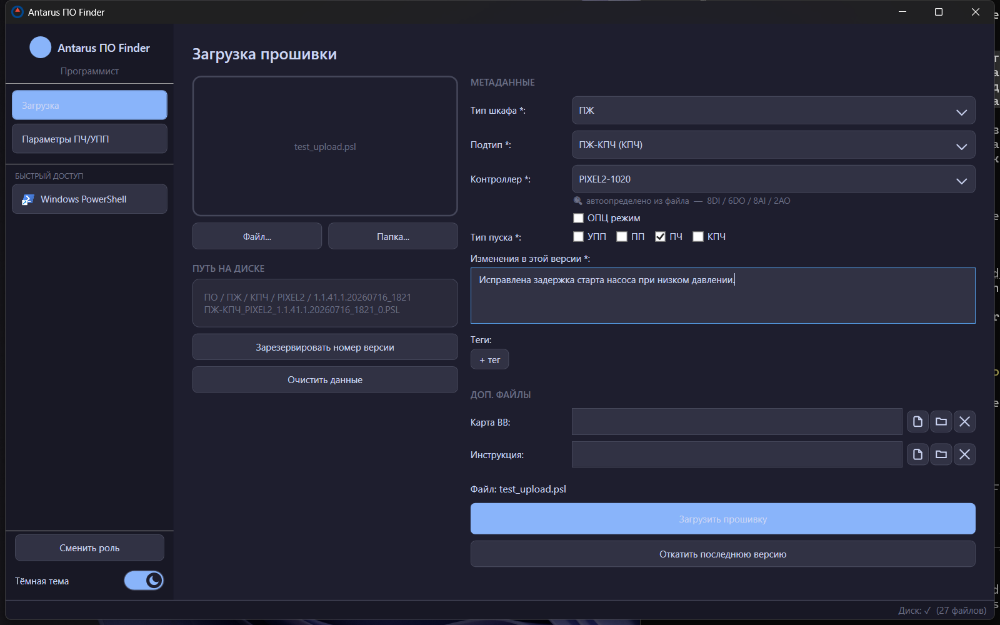
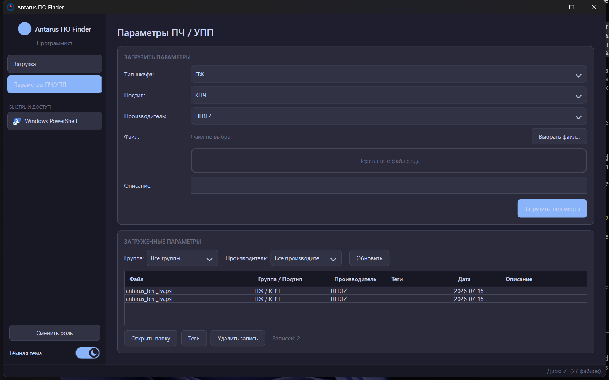

Программист видит в приложении только два раздела: «Загрузка» и «Параметры ПЧ/УПП».
Поиск, Осмотр и Настройки для этой роли скрыты — они не нужны для загрузки ПО.
1
Откройте приложение. Если сейчас активна другая роль — нажмите «Сменить роль»
внизу боковой панели, выберите «Программист» и, если задан пароль программиста, введите его.
Если для роли «Программист» пароль не задан администратором — поле можно оставить пустым.
2. Загрузка прошивки — пошагово

Рис. 1 — страница «Загрузка» сразу после открытия.
1
Выберите Тип шкафа (группу оборудования: ПЖ, НГР или ТГР), затем Подтип (КПЧ, ХП, FD, ВЗУ, КНС, ПП).
Это определяет, в какую папку на диске ляжет файл.
2
Выберите Контроллер — конкретную модификацию (например «PIXEL2-1020»). Список модификаций общий для
всех шкафов, поэтому его можно выбрать до или после выбора файла — если в файле есть метаданные,
Antarus подставит модификацию автоматически (см. раздел 3).
3
Перетащите файл прошивки в зону слева (или папку с несколькими файлами) — либо нажмите «Файл…» / «Папка…».
Путь на диске и итоговое имя файла сразу пересчитаются и покажутся под зоной перетаскивания.
4
Отметьте хотя бы один Тип пуска (УПП / ПП / ПЧ / КПЧ) и опишите изменения в поле
«Изменения в этой версии» — оба поля обязательны, без них кнопка загрузки не активируется.
5
При необходимости добавьте теги (кнопка «+ тег» — можно ввести новый или выбрать уже существующий
из общего списка) и нажмите «Загрузить прошивку».
Drag&drop не работает? Если приложение запущено с повышенными правами (от имени администратора),
а Проводник — с обычными, Windows блокирует перетаскивание файлов между ними (UIPI). Запускайте
Antarus ПО Finder обычным способом (двойной клик), не через «Запуск от имени администратора».
3. Автоопределение контроллера по PSL-файлу
Если загружается файл проекта Segnetics SMLogix (.psl), Antarus читает встроенные метаданные
устройства (модель и модификацию) и, если находит совпадение в справочнике, сам переключает поле
«Контроллер» — этого выбирать вручную не нужно.

Рис. 2 — после выбора .psl-файла поле «Контроллер» само переключилось на
«PIXEL2-1020» с меткой «🔍 автоопределено из файла».
Автоопределение никогда не блокирует загрузку и не заставляет что-то менять принудительно — если
устройство в файле не найдено в справочнике, появится статусное сообщение, а контроллер нужно выбрать
вручную (или сначала добавить модификацию через администратора в Настройки → Иерархия).
Файлы с расширением .PSL получают в имени суффикс _0 — это особенность формата,
единая для всех загрузок такого типа.
4. Режим ОПЦ и тип пуска
Если версия — опытная партия/пробный пуск, включите чекбокс «ОПЦ режим». Появится поле
«№ заявки» — файл получит суффикс с этим номером, а сама версия ляжет в отдельную подпапку «ОПЦ»,
не смешиваясь с обычными релизами.

Рис. 3 — заполненная форма: выбран тип пуска «ПЧ», указано описание изменений, контроллер
определён автоматически.
5. Доп. файлы: Карта ВВ и Инструкция
В нижней части формы можно прикрепить дополнительные файлы или папки:
Поле
Куда копируется
Карта ВВ
подпапка «Карта ВВ» рядом с файлом прошивки
Инструкция
подпапка «Инструкция» рядом с файлом прошивки
Кнопки рядом с полем: выбрать файл, выбрать папку, очистить поле.
6. Резервирование номера версии
Используйте эту функцию, если номер версии нужно вписать в саму прошивку до сборки — например,
версия «зашивается» в бинарник компилятором, и вы не можете просто взять следующий свободный номер
в момент загрузки, потому что кто-то другой может загрузить версию раньше вас.
1
Выберите шкаф/подтип/контроллер как обычно, затем нажмите «Зарезервировать номер версии» —
Antarus зафиксирует следующий свободный номер за вами и покажет его.
2
Впишите этот номер в прошивку, соберите её.
3
Когда будете загружать готовый файл — сверху формы появится выпадающий список
«Использовать зарезервированный номер». Выберите свой резерв вместо «Сгенерировать новый номер» —
тогда в базу попадёт ровно тот номер, что уже вписан в файл.
Отменённые резервы (кнопка «Отменить резерв» в Настройки → Резервы номеров, доступно администратору)
никогда не переиспользуются повторно — следующий номер всегда будет больше.
7. Откат последней версии
Кнопка «Откатить последнюю версию» внизу формы «Загрузка» помечает последнюю активную прошивку для
выбранного шкафа/подтипа/контроллера как откатанную. Файлы на диске не удаляются, при следующей загрузке
тот же номер версии будет предложен снова (свободные номера не «сгорают» безвозвратно, но откатанные — тоже
не переиспользуются, только помечаются статусом «Откатана»).
Перед откатом Antarus всегда показывает диалог подтверждения — действие нельзя отменить одной кнопкой,
проверьте шкаф/подтип/контроллер перед подтверждением.
8. Загрузка параметров ПЧ/УПП

Рис. 4 — страница «Параметры ПЧ/УПП»: форма загрузки сверху, список уже загруженных файлов снизу.
1
Выберите тип шкафа, подтип и производителя оборудования (ПЧ/УПП).
2
Перетащите файл параметров или выберите его кнопкой — необязательное описание можно добавить ниже.
3
Нажмите «Загрузить параметры». В списке снизу можно фильтровать по группе/производителю, открыть
папку с файлом, отредактировать теги или удалить запись (сам файл на диске при этом не удаляется).
9. Частые вопросы и подсказки
Вопрос
Ответ
Нужной модификации контроллера нет в списке
Обратитесь к администратору — модификации добавляются в Настройки → Иерархия (роль
Нал-Администратор/Администратор).
Не активна кнопка «Загрузить прошивку»
Проверьте: выбран файл, отмечен хотя бы один тип пуска, заполнено поле «Изменения в этой версии».
Файл не появляется в поиске у наладчика
Убедитесь, что загрузка завершилась без ошибки (внизу должно появиться статусное сообщение
«Прошивка загружена»); если версия попала в «Модерация тегов» без тегов — это нормально,
наладчик всё равно её увидит через Поиск.
Как узнать, что версия уже когда-то загружалась под этим номером
Antarus не даст создать дубликат — номер версии всегда считается заново от последней активной
+ 1, либо берётся из выбранного резерва.